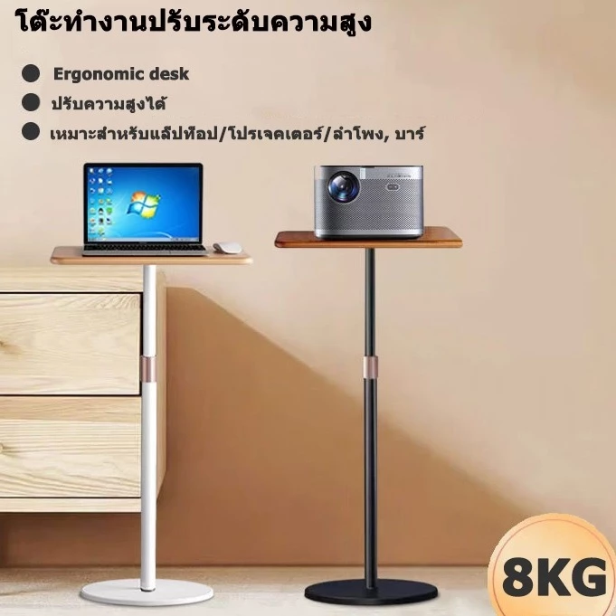

1Ergonomic Desk โต๊ะปรับระดับความสูงเพื่อสุขภาพ
ราคา Shopee: 889 บาท
ราคาถูกที่สุดในกลุ่ม ปรับระดับได้ด้วยมือ เหมาะกับคนที่อยากลองใช้โต๊ะ Ergonomic โดยยังไม่อยากลงทุนมาก โครงสร้างเหล็กแข็งแรง น้ำหนักเบา ประกอบง่าย
- ระบบปรับมือหมุน
- วัสดุเหล็กพ่นสี
- น้ำหนักรับได้~15 kg
- ความสูงปรับได้ปรับได้หลายระดับ
ข้อดี
- ราคาถูกที่สุดในกลุ่ม
- ประกอบง่าย
- น้ำหนักเบา เคลื่อนย้ายสะดวก
ข้อเสีย
- ปรับระดับด้วยมือ ไม่สะดวกเท่าไฟฟ้า
- ไม่มีพื้นที่วางของมาก
เหมาะสำหรับ: คนอยากลองใช้โต๊ะ Ergonomic ครั้งแรก งบไม่เกิน 900 บาท
ดูราคาล่าสุดบน Shopee →